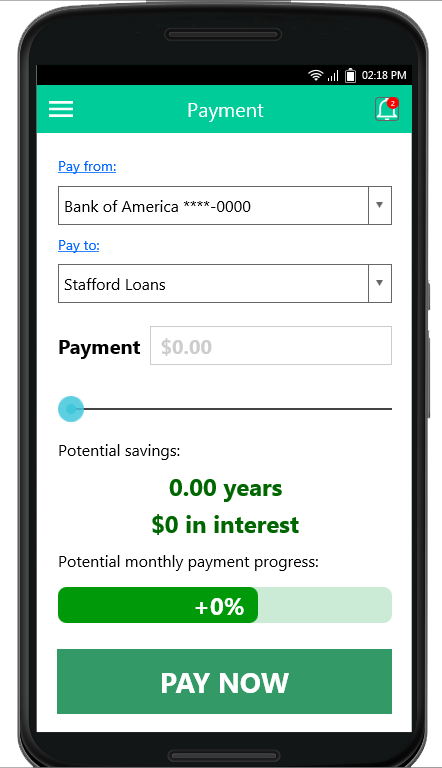
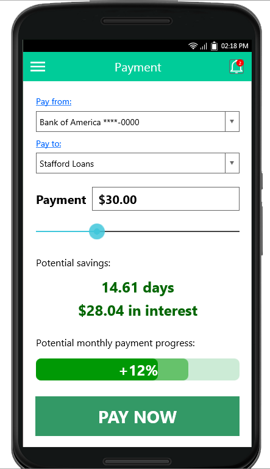
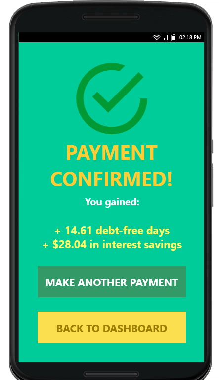

Our Team
Who we are
Game of Loans is the newest resource for young people looking to take charge of their finances. It is our goal to make understanding student loans simple, interactive, and fun for students in college and at university. We see a future of students managing their loans, no matter how big or small, instead of their loans managing them. Formed for the Brandeis course Software Entrepreneurship during the fall semester 2016, Game of Loans is comprised of Evans Agbonsalo, Priyanka Grover, Abhishek Kulkarni, Michael Nagler and Iris Wang. We are a group of students, some struggling with loans ourselves; that is why we dedicated our time and effort into investigating this problem, and finding a solution that would work for all. Each of us has spent the semester employing lean startup techniques to validate the problem that we saw. We spoke with hundreds of students at Brandeis and met with financial institutions and various businesses in order to gain information that would lead us to a solution to the massive problem at hand.
What's wrong with the world today?
According to Student Loan Hero, U.S. students owe a combined $1.26 trillion to financial institutions in the form of student loans, with student debt upon graduation averaging $25,550. Many students willingly take on massive student loans, and throughout their college careers pay very little attention to their growing debt. We found that over 90% of students with loans could not tell us basic information about their loan, including provider, principal, or interest rate. This lackadaisical attitude towards student loans could cost students hundreds or thousands of dollars, and months or even years of student loan payments.
Our Vision
We envision a world where students take responsibility for their debt, and develop good financial habits while in college, and have fun doing it. Say students A and B take out $30,000 loans at a 4% interest rate. Student A pays off their interest every month. Student B does not. Each month Student A pays $100 towards their loan. By the time their provider bills them after graduation, Student B will have a balance of $35,916.17, Student A: $30,000.
In order for Student B to pay off their loan in 12 years, monthly payments would be $315. If Student A makes $315 payments each month, their loan would be paid off in 9 and a half years! After graduation, Student A racks up a total of about $6,513 in interest, while Student B racks up $9,343 over the course of 12 years. The additional payments made by Student A while in college amounted to $4,800. Therefore Student A saved almost $4,000 and 30 months of scheduled payments!
We believe that increasing awareness and making the process of payment a friendly competition between friends will increase student awareness of loans and debt. We also believe that providing a convenient channel to make these payments will entice students to use our service to take control of their financial future.
Our business model makes three very big assumptions: that students think this is a significant impact on their student debt, that students are able to make frequent payments on their loans while in college, and that students are willing to make these payments.
The Game of Loans App: the story of its development
Throughout our time employing lean startup techniques and gathering feedback from potential users, we recognized the 3 most important factors that would drive students to gain control of their loans. Below are what we at Game of Loans believe those aspects are and how we agreed our app should provide these to our customers.
1. Convenience
During our initial brainstorming efforts, we decided to figure out what pains students had regarding their loan. We decided to be a go-to source for students. Showing them information custom tailored to their own student loans, helping them understand how they worked, and encouraging them to be proactive. However, during an interview with a fellow Brandeis student, we realized that one of the major pains that students had was the difficulty in making payments. Dealing with financial institutions and their software is often a daunting task. We decided we could alleviate some of the alienation felt by making a channel for students to make payments that was more familiar, and similar to services that students already used every day, like Venmo.
Making payments on student loans while in college is fairly inconvenient. Especially when most students aren't aware of where their loan comes from, and don't know if they have the income to set up automatic payments. Our application would reduce some of these issues by simplifying user verification and disguising loan payments as in-game items.
2. Information and feedback
In order to provide value to our customers, we knew that we needed to be a go-to source for an individual's student loan information. So, we set out to discover what students knew about their financial burdens. Out of 30 students surveyed, 21 had loans, and 20 knew almost nothing about their student loans. Many of the students interviewed knew that their loan was part of the Stafford loan program, but they knew nothing beyond that, not the provider, not the amount per semester, not even the interest rate. We believe that failure to understand loans is one of the reasons so many people struggle with them after graduation.
Game of Loans would keep students up-to-date on their loan. Each payment means time and money in the future, and our goal is to increase awareness of this fact. For example, if a student with a $30,000 Stafford loan payed off their interest every day, they would be able to pay off their loan two and a half years earlier. Potential customers have told us that reminders of this would encourage them to make more payments, and as a result save more time and more money. Our app would encourage users to make regular payments on their loans by showing them in real time the impact of each individual payment, and their projected benefits.
3. Competition
Although on the surface, using a game to encourage making payments seems like a gimmick, our research has led to conclusions that show strong correlations between games, habits, and customer loyalty. Therefore adding a gaming layer to financial responsibilities would keep our customers coming back to us to make payments, because there is a bigger reward and more incentive. Our original idea was to have a running leaderboard, which would display how "well" you did on your student loan payments, compared to your friends. However, other students that we spoke to said they would feel uncomfortable with such a ranking system, and would make people feel bad for not being able to afford frequent payments. Game of Loans decided that animosity like this would promote classism between friends and demoralize potential users, and this was not part of our vision.
During our hypotheses testing, we found that students would be much more likely to make a payment on their student loan if there was an associated "upgrade" in the game. College students typically play casual games on their mobile device like Temple Run or Angry Birds. These games offer in-app purchases: a feature we would emulate. Since most users spend money on these games, and we offer a real-life reward for in-app purchases, students that we have interviewed have enthusiastically supported this idea.
User Experience
Below is the User Interface for making payments:
  For the user experience of making a payment, we wanted to emphasize the impact and value that each payment would have on the user's future. By highlighting the potential savings, in both time and money, we believe that we can encourage our users to come back and make payments again and again because of the immediate gratification that they recieve. The progress bar is set by the user. Each user can set a goal for each month, and each payment visually denotes the progress the user is making towards their goal. This is the core of our app and the most important experience for the user. We believe the positive symbols and numbers will encourage use of our product.
Final Report Pitch Deck